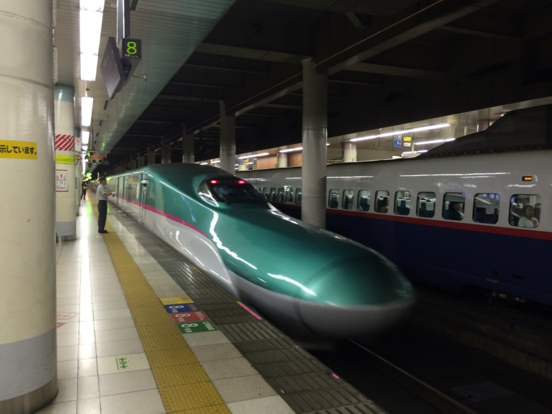
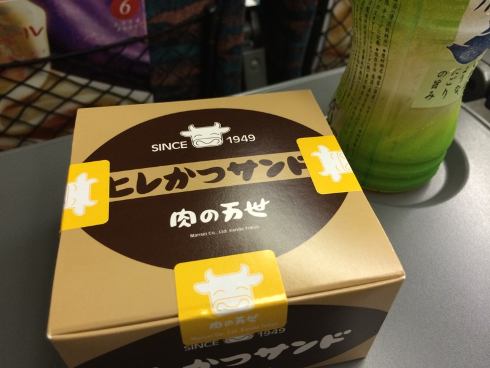
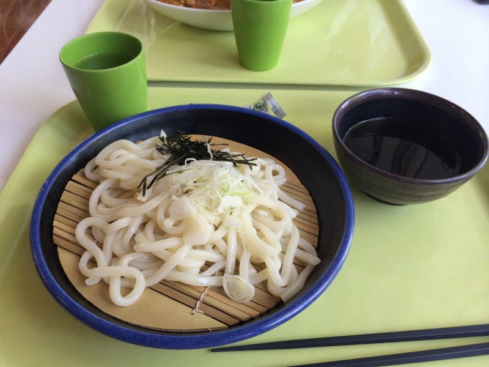
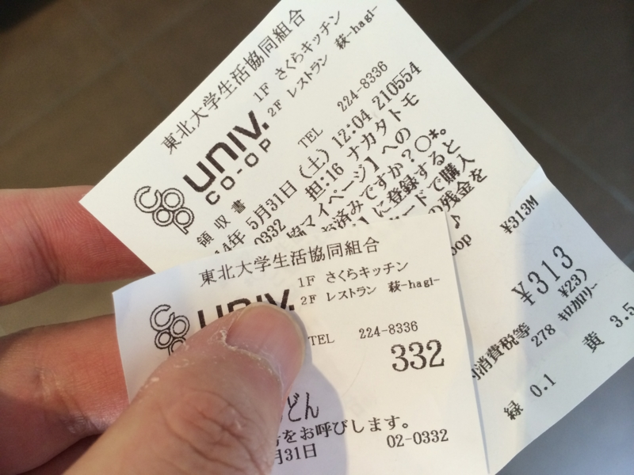
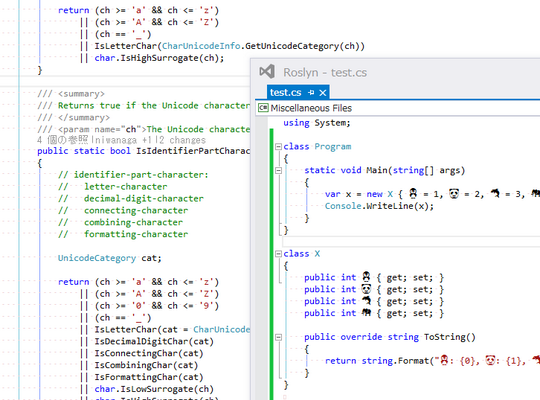
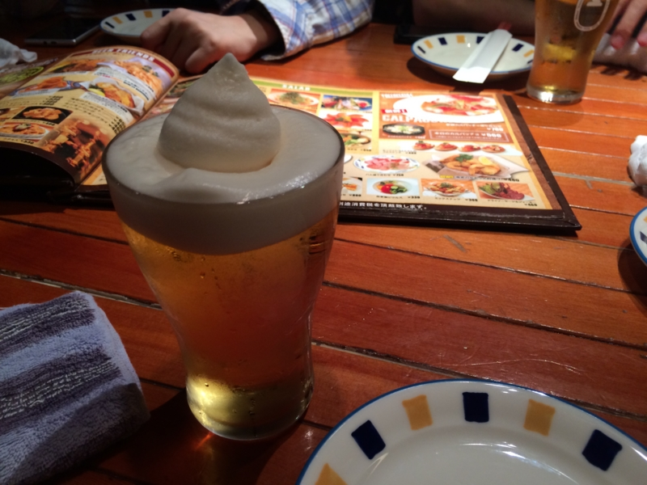

プログラミング生放送勉強会 第28回＠東北大学 に参加してきたった。 #pronama
公開日：

de:code の次の日は、新幹線で仙台へ。@bonprosoft が来いと脅すので、しぶしぶプロ生＠仙台に参加してきました（ぉ

東北へ行くのは、震災前の2月以来。まずは上野駅で買った万世の万カツサンドで朝の腹ごしらえです。そういえば、その日の前の晩も万世ビルの地下で飲んだっけ……。
確か10時か11頃、仙台駅に到着。四国の首都・松山よりも栄えていてグギギギｇ……。
会場の東北大学までは徒歩で15分ぐらい。会場にはすでに @you_and_i さんと @bonprosoft が来ていて、会場の準備をしてくれていました。
松山でもやってみようかしら……

お昼ご飯は @bonprosoft と学食でざるうどん。朝食べた万カツサンドがちょっとヘビィだった……。

学食でご飯食べるなんて、10年ぶりぐらいかも？ 小奇麗なところで、どこぞの大学とえらい違いでした。まぁ、メニューはあっちのほうが多いかもだけれど……。
セッション
詳しいレポートはほかの人に任せるとして、いくつかピックアップ。
Windows の画面スケーリングをきちんと理解しよう
グレープシティの八巻さんが解説する、スケーリングに関するセッション。とってもよくまとまっていて、これさえ読めばだいたいスケーリングに関しては理解できる感じ（Mac は除く）。スライドが公開されているので、それを見るとよいでしょう。最後のほうの豆知識が個人的に興味を引いたかも。
そういえばこのブログ、購読してたわ……。
Introduction to Roslyn
コンパイラープラットフォーム“Roslyn”とはなんぞ、みたいな感じの @bonprosoft のセッション。テキストの出力をフックして“プロ生ちゃんマジ天使！”という言葉を付け加える謎コンパイラーのデモとかしてた（わしがアドバイスした）けど、割と地味だったかもしれない（ぉい
関係ないけど、“Roslyn”といえば @ufcpp さんのこのブログとかも面白かったかも。絵文字が識別子として使えているが、やっていることは @bonprosoft と同じ感じなのかな。

まだちょっと不安定＆遅そうだけれど、これが Visual Studio 14 の基盤となる技術になるはず。
プロ生ちゃんSL | 凡人のブログ ← なにしてんねんって感じｗ
javascript 製 RDB jsrel の紹介
@shinout さんのセッション。だいぶ練習はしたそうだけど、ずいぶんエレガントにライブコーディングをなさるもんだなぁ、と感心してみていた。CoffeeScript なんて自分は書けないのだけど、読むのは割かし楽だねぇ。
紹介してもらった jsrel のソースはこちら。ネストを減らして、JavaScript でエレガントに DB 操作が書けるのがポイントなのかな。今風でとてもセンスが良い感じ。
ライトニングトーク
自分も参加したけど、“Extreme”な人たちのバンジージャンプネタにすべて持っていかれて悲しい。わしの中で「仙台人＝バンジー」というイメージが植えつけられてしまった。
あと、メモが今ちょっと見当たらないんだけど、波形ソフトの紹介が面白かった。「音楽は数学」ってたまに言われたりすると思うけれど、ああいうビジュアルな解析を見せられると納得できる。ソフト名を思い出したら試してみたいかも。
追記
@daruyanagi この前のソフトですが、名前はAmadareです！ホームページは製作予定ですが、今のところはこちらで配布しておりますよ！
http://t.co/itMMrWxMXG
— ぼんぷろ (@bonprosoft) 2014, 6月 9さいごに

お疲れ様！ 懇親会も楽しかった……というか、若い人たちのパワーには勝てませんなーって感じ。こういう子たちに思う存分暴れてもらえる環境を作るのが、我々おっさんの役割なのかもしれませんね。
今週末は 6/14 プログラミング生放送勉強会 第29回＠サイボウズ株式会社 松山オフィス 開催！ #pronama | プログラミング生放送 です。懸念の人集めは満員御礼、ちょっとやりすぎたぐらい。県内の人の発表枠・参加枠が足りなくて、しまったなぁ……と思いました。まぁ、今回は仕方ない。あとはスムーズに進行して、みんなに楽しんでいただければと思います。
おまけ → プロ生@仙台に参加します！ #pronama - がりらぼ 来なかったマンｗｗｗ